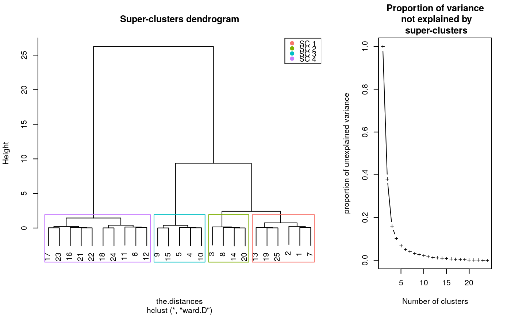
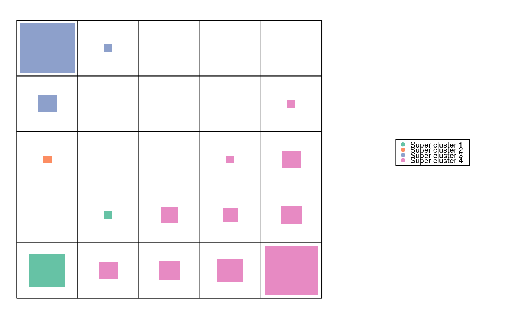
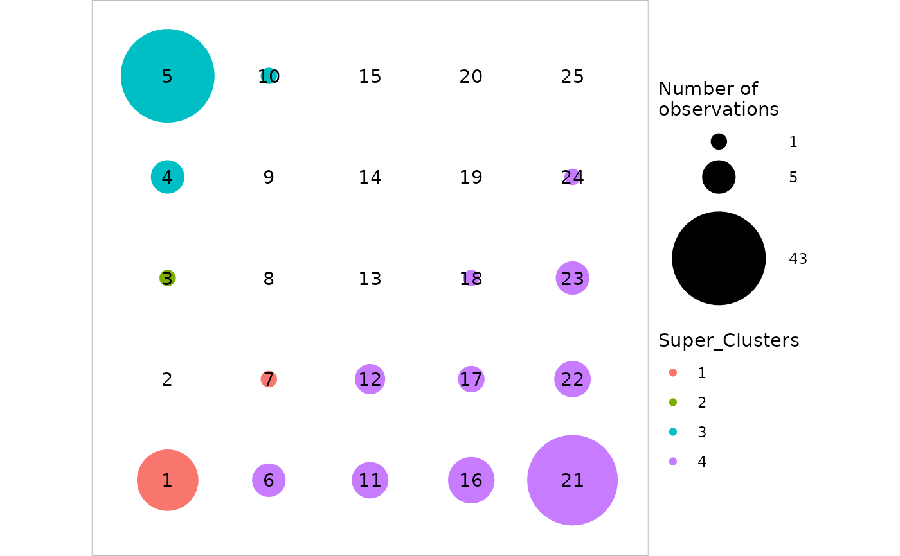

Aggregate the resulting clustering of the SOM algorithm into super-clusters.
superClass(sommap, method, members, k, h, ...) # S3 method for somSC print(x, ...) # S3 method for somSC summary(object, ...) # S3 method for somSC plot( x, what = c("obs", "prototypes", "add"), type = c("dendrogram", "grid", "hitmap", "lines", "meanline", "barplot", "boxplot", "mds", "color", "poly.dist", "pie", "graph", "dendro3d", "projgraph"), plot.var = TRUE, show.names = TRUE, names = 1:prod(x$som$parameters$the.grid$dim), ... ) # S3 method for somSC projectIGraph(object, init.graph, ...)
| sommap | A |
|---|---|
| method | Argument passed to the |
| members | Argument passed to the |
| k | Argument passed to the |
| h | Argument passed to the |
| ... | Used for |
| x | A |
| object | A |
| what | What you want to plot for superClass object. Either the
observations ( |
| type | The type of plot to draw. Default value is |
| plot.var | A boolean indicating whether a graph showing the evolution of
the explained variance should be plotted. This argument is only used when
|
| show.names | Whether the cluster titles must be printed in center of
the grid or not for |
| names | If |
| init.graph | An igraph object which is projected
according to the super-clusters. The number of vertices of |
The superClass function returns an object of class
somSC which is a list of the following elements:
clusterThe super clustering of the prototypes (only if either
k or h are given by user).
treeAn hclust object.
somThe somRes object given as argument (see
trainSOM for details).
The projectIGraph.somSC function returns an object of class
igraph with the following attributes:
the graph attribute layout which provides the layout of the
projected graph according to the center of gravity of the super-clusters
positionned on the SOM grid;
the vertex attributes name and size which, respectively
are the vertex number on the grid and the number of vertexes included in
the corresponding cluster;
the edge attribute weight which gives the number of edges (or
the sum of the weights) between the vertexes of the two corresponding
clusters.
The superClass function can be used in 2 ways:
to choose the number of super clusters via an hclust
object: then, both arguments k and h are not filled.
to cut the clustering into super clusters: then, either argument
k or argument h must be filled. See cutree for
details on these arguments.
The squared distance between prototypes is passed to the algorithm.
summary on a superClass object produces a complete summary of
the results that displays the number of clusters and super-clusters, the
clustering itself and performs ANOVA analyses. For type="numeric" the
ANOVA is performed for each input variable and test the difference of this
variable accross the super-clusters of the map. For type="relational"
a dissimilarity ANOVA is performed (see (Anderson, 2001), except that in the
present version, a crude estimate of the p-value is used which is based on
the Fisher distribution and not on a permutation test.
On plots, the different super classes are identified in the following ways:
either with different color, when type is set among:
"grid" (N, K, R), "hitmap" (N, K, R), "lines" (N, K, R),
"barplot" (N, K, R), "boxplot", "poly.dist" (N, K, R),
"mds" (N, K, R), "dendro3d" (N, K, R), "graph" (R),
"projgraph" (R)
or with title, when type is set among: "color" (N, K),
"pie" (N, R)
In the list above, the charts available for a numerical SOM are maked
with a N, with a K for a korresp SOM and with a R for relational SOM.
projectIGraph.somSC produces a projected graph from the
igraph object passed to the argument variable as
described in (Olteanu and Villa-Vialaneix, 2015). The attributes of this
graph are the same than the ones obtained from the SOM map itself in the
function projectIGraph.somRes. plot.somSC used with
type="projgraph" calculates this graph and represents it by
positionning the super-vertexes at the center of gravity of the
super-clusters. This feature can be combined with pie.graph=TRUE to
super-impose the information from an external factor related to the
individuals in the original dataset (or, equivalently, to the vertexes of the
graph).
Anderson M.J. (2001). A new method for non-parametric multivariate analysis of variance. Austral Ecology, 26, 32-46.
Olteanu M., Villa-Vialaneix N. (2015) Using SOMbrero for clustering and visualizing graphs. Journal de la Societe Francaise de Statistique, 156, 95-119.
set.seed(11051729) my.som <- trainSOM(x.data = iris[,1:4]) # choose the number of super-clusters sc <- superClass(my.som) plot(sc)#> Warning: Impossible to plot the rectangles: no super clusters.#> #> SOM Super Classes #> Initial number of clusters : 25 #> Number of super clusters : 4 #> #> #> Frequency table #> 1 2 3 4 #> 6 4 5 10 #> #> Clustering #> 1 2 3 4 5 6 7 8 9 10 11 12 13 14 15 16 17 18 19 20 21 22 23 24 25 #> 1 1 2 3 3 4 1 2 3 3 4 4 1 2 3 4 4 4 1 2 4 4 4 4 1 #> #> #> ANOVA #> #> Degrees of freedom : 3 #> #> F pvalue significativity #> Sepal.Length 98.631 0 *** #> Sepal.Width 53.697 0 *** #> Petal.Length 498.266 0 *** #> Petal.Width 292.188 0 *** #>plot(sc)